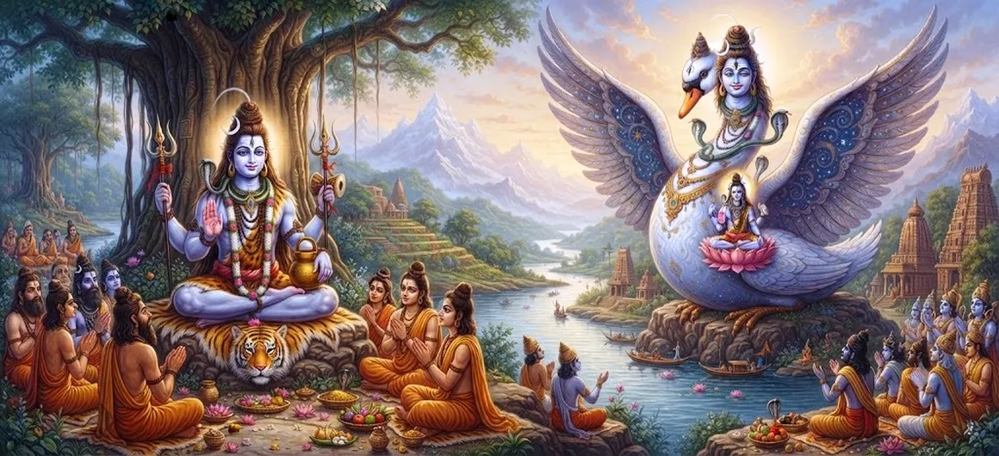

Shiva's Incarnation as Yatinatha Hamsa
Chapter 28 of the Shatarudra Samhita presents the sacred incarnation of Lord Shiva as Yatinatha Hamsa. The narrative begins on Mount Arbuda, where a devoted Bhilla hunter named Ahuka and his wife Ahuka lived a simple life centered upon the worship of Lord Shiva.
To test the sincerity of their devotion and their adherence to the sacred duty of hospitality, Shiva appeared at their dwelling in the guise of an ascetic. The couple's response to the unexpected guest became the turning point of their destiny.
Through sacrifice, hospitality, unwavering devotion and divine grace, the story ultimately connects Ahuka and Ahuka with their future births as Nala and Damayanti. The incarnation reveals how sincere devotion can draw the direct compassion of Lord Shiva.
Chapter 28 Highlights
Yatinatha Hamsa
Reveals Shiva's compassionate incarnation connected with the testing and blessing of devoted souls.
Mount Arbuda
The sacred setting where Ahuka and Ahuka lived and worshipped Shiva.
Sacred Hospitality
Highlights the importance of welcoming a guest even in difficult circumstances.
Supreme Sacrifice
Ahuka's willingness to protect the ascetic guest demonstrates steadfast duty.
Divine Boon
Shiva grants a future destiny filled with union, prosperity and spiritual blessing.
Nala and Damayanti
The divine promise ultimately leads to their future birth and sacred union.
Core Topics in This Chapter
- 01 The Manifestation of Yatinatha →
- 02 Ahuka and Ahuka of Mount Arbuda →
- 03 The Test of Hospitality →
- 04 Ahuka's Sacrifice and Devotion →
- 05 Ahuka's Devotion and Shiva's Appearance →
- 06 The Divine Boon →
- 07 Ahuka and Ahuka Become Nala and Damayanti →
- 08 Yatinatha Hamsa and the Union of Nala and Damayanti →
- 09 The Manifestation of Acaleshvara →
- 10 The Spiritual Fruits of the Narrative →
The Manifestation of Yatinatha
Nandishvara describes Yatinatha as an incarnation of the supreme Shiva, appearing for the welfare of devoted souls. In this narrative, the Lord takes the appearance of an ascetic and approaches a humble household in order to examine the sincerity of its devotion.
The disguise is important to the story because Shiva does not arrive with the obvious signs of divine majesty. Instead, he appears as a guest who requires shelter. The test therefore concerns how devotees respond to a sacred responsibility when no worldly reward is visible.
Yatinatha's appearance demonstrates a recurring principle of sacred narratives: the Divine may test devotion through ordinary encounters, and the true measure of faith is often revealed through conduct rather than words.
Ahuka and Ahuka of Mount Arbuda
On Mount Arbuda lived a Bhilla hunter named Ahuka with his wife Ahuka. Their life was simple, but their devotion to Lord Shiva was sincere. They worshipped the Lord and followed the religious duties available to them within their circumstances.
Ahuka went into the forest to obtain food. While he was away, Shiva approached the dwelling in the form of an ascetic. When Ahuka returned, he respectfully welcomed the guest and offered him the reverence due to a holy person.
The episode establishes that devotion is not limited to formal worship. The couple's treatment of a living guest becomes itself an expression of their devotion to Shiva.
The Test of Hospitality
Yatinatha asked Ahuka to provide a place where he could stay for the night. Ahuka explained that the dwelling was too small for all of them to remain inside comfortably.
Ahuka's wife, however, urged him not to reject the guest. She reminded him that turning away a guest would be contrary to the duty of a householder. Her words reveal her understanding that hospitality is a sacred obligation even when resources are limited.
Ahuka ultimately chooses to protect the guest's comfort. Rather than allow the ascetic to leave, he keeps the guest within the dwelling and remains outside himself with his weapons.
Ahuka's Sacrifice and Devotion
During the night, Ahuka remained outside while guarding the dwelling. Wild animals attacked him, and although he resisted with all his strength, he was eventually overcome and killed by the beasts.
The ascetic saw what had happened in the morning and was deeply moved. The death of the devotee becomes the central moment of the divine test, because Ahuka had accepted personal danger rather than violate the duty of hospitality.
His sacrifice shows that devotion can be expressed through action, courage and selflessness. The value of his service lies not in its outward appearance but in the sincerity with which it was performed.
Ahuka's Devotion and Shiva's Appearance
Ahuka was naturally overcome with grief, yet she did not respond with anger toward the ascetic. Instead, she regarded her husband's death through the framework of devotion and accepted her own duty with remarkable determination.
She asked the ascetic to arrange the funeral pyre and declared that she would follow her husband. The ascetic accepted her words and arranged the pyre.
At the decisive moment, Shiva revealed himself and praised her steadfastness. The disguise disappeared, and the devotee understood that the ascetic who had tested their household was none other than Lord Shiva Himself.
The Divine Boon
Pleased with Ahuka's conduct, Shiva offered her a boon. The Lord declared that her devotion and the devotion of her husband would not end with that lifetime. Their spiritual bond would continue through another birth.
Shiva foretold that Ahuka would be born as Damayanti, the daughter of King Bhima of Vidarbha, while Ahuka would be born as Nala, the son of King Virasena in Nishadha.
The blessing transforms the apparent tragedy of the forest dwelling into a divine continuation of their spiritual journey. Their future union would bring them royal prosperity as well as a path toward liberation.
Ahuka and Ahuka Become Nala and Damayanti
In accordance with Shiva's blessing, Ahuka was born as Nala, the son of Virasena and the future king of Nishadha. Ahuka was born as Damayanti, the daughter of King Bhima of Vidarbha.
Their new births placed them in royal circumstances, but the deeper connection between them arose from the blessing received in their former life. The narrative presents their relationship as part of a divine continuation rather than an isolated worldly event.
Their story therefore illustrates the continuity of spiritual merit. Sincere conduct performed in one life may bear fruit beyond the immediate circumstances in which it was offered.
Yatinatha Hamsa and the Union of Nala and Damayanti
Shiva's compassionate role continues through the form of the swan. Yatinatha, now associated with the hamsa form, becomes an instrument in bringing Nala and Damayanti together.
The swan is traditionally associated with discernment and purity. Within this narrative, the hamsa becomes a symbol of divine intelligence guiding two lives toward the destiny promised by Shiva.
Through the fulfillment of the divine promise, the story demonstrates that Shiva's grace can operate across different births and through forms that may appear ordinary or unexpected.
The Manifestation of Acaleshvara
After granting the divine boon, Shiva assumes the form of a linga and becomes stationary. This manifestation is remembered as Acalesha, connecting the story of Yatinatha with a sacred and enduring form of Shiva.
The stationary form suggests permanence. The events of human life change, births succeed one another, and destinies unfold, yet the divine presence remains established as an enduring refuge.
The narrative therefore joins two dimensions of Shiva's grace: personal intervention in the lives of devotees and the permanent sacred presence represented by the linga.
The Spiritual Fruits of the Narrative
The chapter praises the sacred account of Yatinatha Hamsa as a narrative capable of deepening devotion. It presents hospitality, sacrifice, faith and divine compassion as interconnected expressions of spiritual life.
The story teaches that sincere devotion should remain steady even when circumstances become difficult. Ahuka and Ahuka possessed very little materially, yet their willingness to serve the guest became the foundation of Shiva's blessing.
The narrative concludes by emphasizing the spiritual merit associated with hearing and recounting the sacred incarnation of Yatinatha. Devotion is strengthened when the devotee remembers that divine grace may arise through the simplest acts of selfless service.
Key Teachings of Chapter 28
Hospitality as Dharma
Welcoming a guest is presented as a sacred responsibility of the householder.
Selfless Sacrifice
Ahuka's conduct demonstrates the strength of devotion expressed through sacrifice.
Divine Testing
Shiva's disguise reveals the sincerity of devotion through an ordinary encounter.
Power of Grace
Divine grace transforms suffering into a new spiritual destiny.
Divine Guidance
Yatinatha Hamsa guides the fulfillment of Shiva's promise across births.
Continuity of Merit
The story connects sincere conduct in one life with blessings received in another.
Spiritual Reflection
The story of Yatinatha Hamsa reminds devotees that the Divine may enter life in forms that are not immediately recognized. Ahuka and Ahuka did not know that the ascetic who requested shelter was Shiva Himself. Yet they treated him with reverence because their devotion taught them to honour the guest before considering their own comfort. Their conduct transformed an ordinary forest dwelling into the place where divine grace was revealed. The story also shows that sincere devotion is not measured by wealth or social position. What matters is the heart with which service is offered. Shiva's blessing then carries their spiritual bond into another birth, where Ahuka and Ahuka become Nala and Damayanti. Through Yatinatha Hamsa, divine intelligence guides the fulfillment of that promise. The chapter therefore invites devotees to recognize hospitality, sacrifice, faith and compassion as living forms of worship.
Living the Message of Chapter 28
The first lesson is to practice hospitality without judging a person's outward appearance. A guest, traveller, seeker or person in need can become an opportunity to express genuine compassion.
The second lesson is to remain devoted when circumstances are inconvenient. Ahuka and Ahuka possessed limited resources, yet they did not use their limitations as an excuse to abandon their duty.
Finally, the chapter encourages devotees to trust that sincere action has spiritual value even when its immediate result is painful or difficult to understand.
Key Spiritual Concepts
The ascetic manifestation of Lord Shiva who tests the devotion of Ahuka and Ahuka.
The swan form associated with Yatinatha and the divine guidance of Nala and Damayanti.
The devoted Bhilla hunter who places the duty of hospitality above his own safety.
The devoted wife whose insistence on honouring the guest strengthens the sacred test.
The future birth of Ahuka as the son of Virasena and king of Nishadha.
The future birth of Ahuka as the daughter of King Bhima of Vidarbha.
The stationary Shiva manifestation associated with the conclusion of the divine blessing.
The sacred duty of receiving and honouring a guest.
Chapter Summary
Shatarudra Samhita Chapter 28 narrates Shiva's incarnation as Yatinatha Hamsa. On Mount Arbuda, the devoted Bhilla couple Ahuka and Ahuka worship Shiva and live according to their limited means. Shiva comes to their dwelling in the guise of an ascetic and asks for shelter. Although their home is too small, Ahuka's wife insists that the guest must not be turned away. Ahuka therefore allows the ascetic to remain inside while he stays outside to guard the dwelling. During the night he is attacked and killed by wild animals. Ahuka then resolves to follow her husband, but Shiva reveals his true form and grants her a boon. He declares that Ahuka will be born as Damayanti, daughter of King Bhima of Vidarbha, while Ahuka will be born as Nala, son of Virasena of Nishadha. Shiva's divine grace then continues through the hamsa form, which helps bring Nala and Damayanti together. The chapter concludes by praising the sacred narrative and its power to deepen devotion, faith and spiritual aspiration.
Frequently Asked Questions
① What is the primary topic of Shatarudra Samhita Chapter 28?
The chapter narrates Shiva's incarnation as Yatinatha Hamsa and the sacred test of devotion involving Ahuka and Ahuka.
② Why did Shiva appear as an ascetic?
Shiva appeared as an ascetic to test the couple's sincerity, hospitality and willingness to fulfil their sacred duty.
③ What was the role of Ahuka in the story?
Ahuka accepted the ascetic as a guest and chose to remain outside the dwelling so that the guest could stay inside comfortably.
④ Who did Ahuka and Ahuka become in their next birth?
Ahuka was born as Nala, son of Virasena, while Ahuka was born as Damayanti, daughter of King Bhima of Vidarbha.
⑤ How does Yatinatha Hamsa connect Nala and Damayanti?
The hamsa form of Yatinatha becomes an instrument through which Shiva's earlier promise is fulfilled and Nala and Damayanti are brought together.
⑥ What is the main spiritual lesson of the chapter?
The chapter teaches that sincere devotion, hospitality, sacrifice and faith can attract divine grace even when the devotee possesses very little materially.
“Where devotion is sincere and hospitality is offered without selfishness, the grace of Lord Shiva can transform even an ordinary moment into a sacred turning point.”
Continue Through Shatarudra Samhita
Chapter 28 reveals the compassionate Yatinatha Hamsa incarnation and the sacred transformation of Ahuka and Ahuka into Nala and Damayanti. Continue to Chapter 29 to explore Shiva's next divine manifestation as Krishnadarshana.